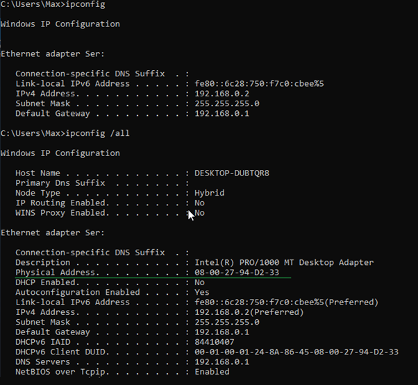
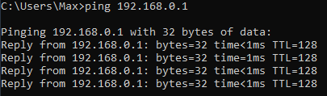

ADMINISTRACJA SYSTEMAMI OPERACYJNYMI / Interfejs sieciowy
Konfiguracja interfejsów sieciowych Windows w wersji klient i serwer
Aby móc świadczyć usługi sieciowe, musi zachodzić komunikacja pomiędzy usługo dawcą a usługo odbiorcą.Skonfigurujmy zatem statyczne połączenie pomiędzy wirtualnymi maszynami.
Poniżej przedstawiono jak przejść do konfiguracji interfejsu sieciowego na Windows 10: Poniżej przedstawiono jak przejść do konfiguracji interfejsu sieciowego na Windows Server 2012 R2: Ta konfiguracja sprawi że serwer będzie robił za tymczasowego DNS'a.
Czasem pojawi się o tym taka informacja. Więc na kliencie podasz adres serwera jako bramę domyślną oraz jako DNS. Teraz weryfikujemy czy komunikacja jest poprawna.
Uruchom wiersz poleceń CMD. Komenda ipconfig pokaże ci podstawową konfigurację interfejsu sieciowego.
Natomiast ipconfig /all da ci wszystkie informacje o karcie sieciowej gdzie na przykład:
"Host Name" to nazwa hosta.
"Physical Address" jest to address MAC przydatny do konfiguracji konkretnego urządzenia.  Aby sprawdzić czy serwer wraz z klientem się "widzą" wykonaj ping
Taki wynik informuje cię o poprawnym przesyłaniu pakietów między komputerami.  Taki wynik informuje cię o niepoprawnym przesyłaniu pakietów między komputerami.